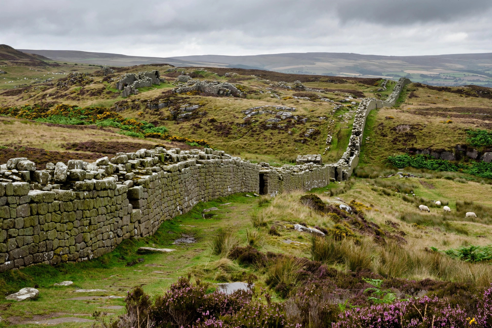

| Roman Britain (Britannia) | |
|---|---|
| Period | 43 – c. 410 AD |
| Conquered by | Emperor Claudius (43 AD) |
| Capital | Londinium (London) |

Roman Britain was the territory of Britain under Roman rule from 43 AD, when Claudius invaded, to about 410, when Roman administration ended. Julius Caesar had raided Britain in 55–54 BC, but permanent conquest began under Claudius and the general Aulus Plautius.
Roman forces subdued the lowlands despite resistance, notably Boudica's revolt (60/61 AD), which burned Colchester, London and St Albans before defeat. Agricola campaigned in Scotland (Mons Graupius, 83/84), but Rome withdrew to Hadrian's Wall (built from 122), with a shorter advance to the Antonine Wall (142–c. 162).
Roman Britain developed towns (Londinium, Eboracum/York, Aquae Sulis/Bath), roads, villas, baths and an economy exporting grain, minerals and slaves. Population estimates range around 3–4 million. Christianity spread in the later empire; Britain produced the usurper-emperors Carausius and Constantine III.
With troops withdrawn for continental crises, in about 410 the emperor Honorius reportedly told the Britons to look to their own defence. Anglo-Saxon settlement followed in the ensuing Migration Period.